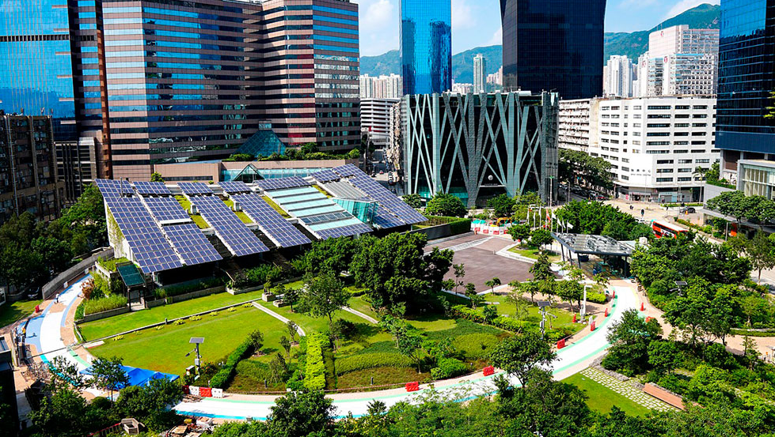
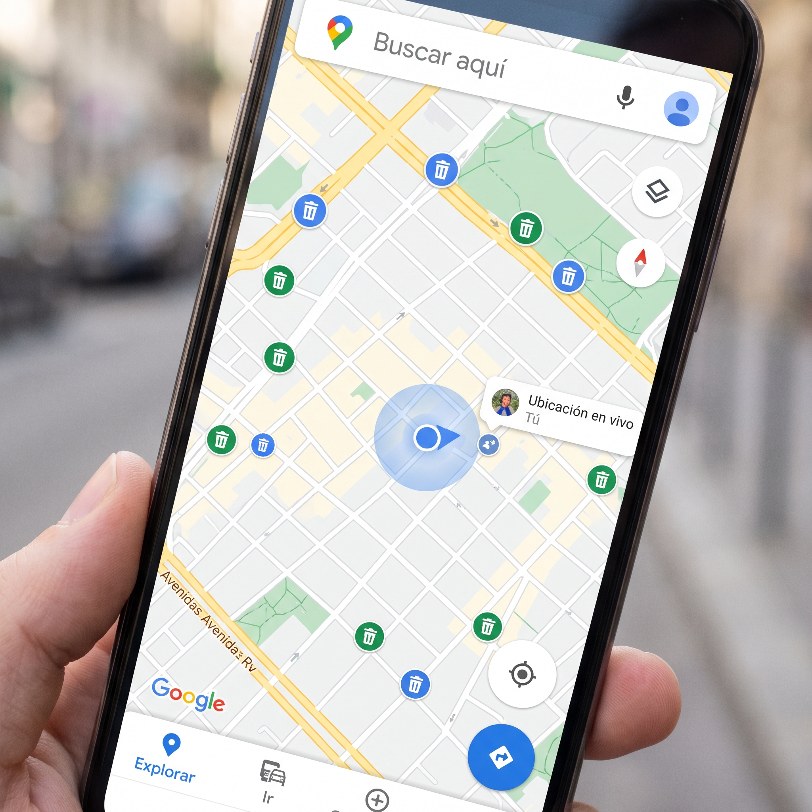
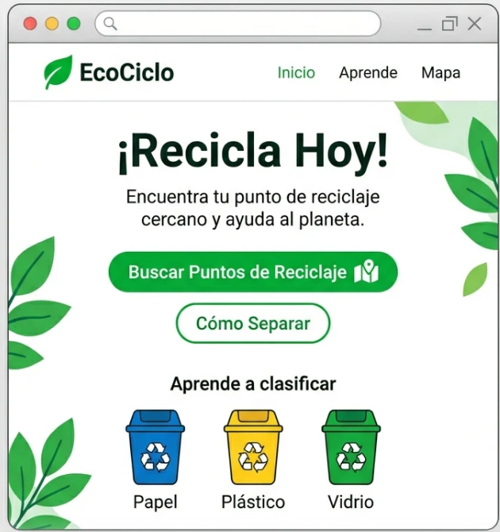
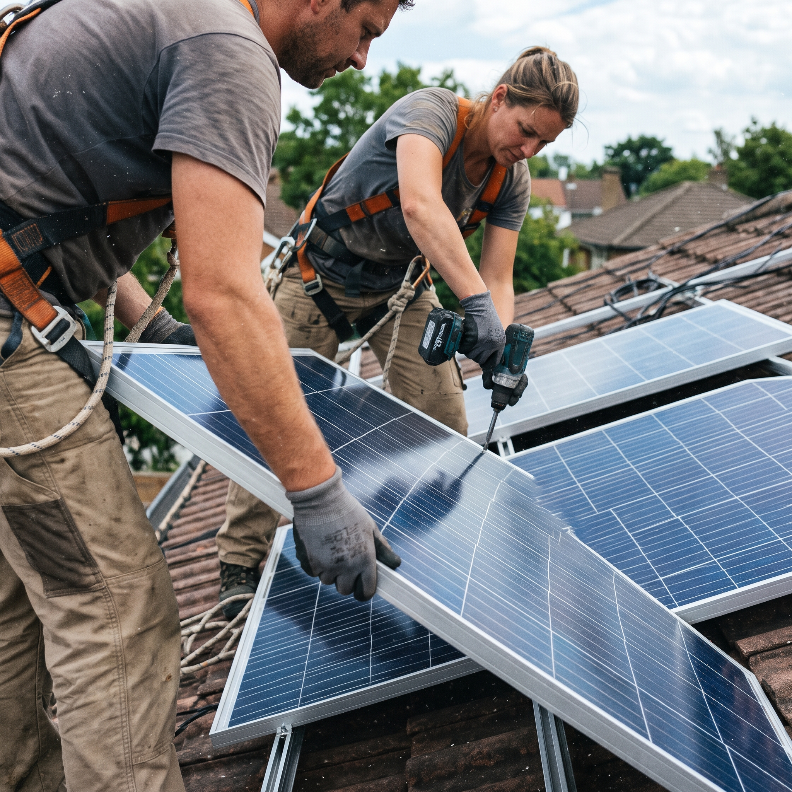

Cargando Ciudad Sostenible...

Actualmente las ciudades del Ecuador enfrentan tres grandes desafíos que afectan la calidad de vida y el medio ambiente:

Implementacion de mas basureros y una app con un mapa que muestre todos los basureros cercanos al usuario
Al abrir el mapa se detecta la ubicacion en tiempo real de la persona y se muestran iconos de basureros en un diametro de 120

Pagina web para ubicar puntos verdes y fomentar la separación de residuos.
Permite a los ciudadanos encontrar contenedores cercanos para desechos de organicos, plástico, cartón y vidrio, sumando puntos canjeables por beneficios locales.

Energía limpia y alternativa para reducir la dependencia eléctrica en hogares y comercios de la ciudad.
Implementación de paneles solares monitoreados desde nuestra página para medir en tiempo real la energía limpia generada y evitar sobrecargar la red en épocas de sequía.
Calles más limpias y sin malos olores, beneficiando directamente a los habitantes del barrio.
Mayor aprovechamiento de materiales y apoyo directo al trabajo de los recicladores locales.
Ahorro energético y menor dependencia de la red tradicional gracias al uso de energía solar limpia en toda la ciudad.